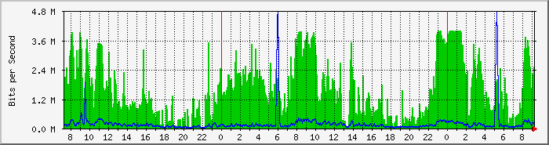
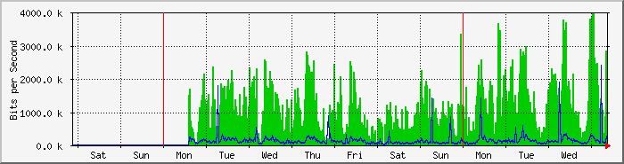
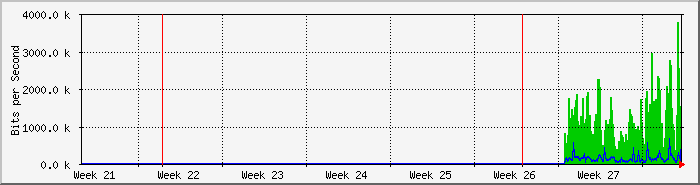
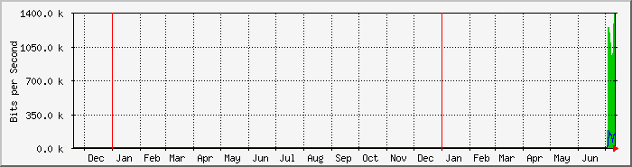

FortiGate 60D Interfaz WAN1 (ISP Telecom Integra 4/4) - Santa Fe Predio
| Equipo: | FortiGate 60D |
| Mantenido por: | redes@ersaurbano.com |
| Descripcion: | wan1 |
| Tipo de Puerta: | ethernetCsmacd (6) |
| Nombre de Puerta: | wan1 |
| Max Speed: | 125.0 MBytes/s |
| Ip: | 181.88.196.146 (host146.181-88-196.telecom.net.ar) |
The statistics were last updated Thursday, 14 July 2022 at 9:16,
at which time 'FGT60DSantafe' had been up for 19:49:59.
`Daily' Graph (5 Minute Average)

|
Max |
Average |
Current |
| In |
3987.7 kb/s (0.4%) |
1525.9 kb/s (0.2%) |
2520.1 kb/s (0.3%) |
| Out |
4727.7 kb/s (0.5%) |
182.6 kb/s (0.0%) |
230.6 kb/s (0.0%) |
`Weekly' Graph (30 Minute Average)

|
Max |
Average |
Current |
| In |
3965.0 kb/s (0.4%) |
1152.9 kb/s (0.1%) |
2585.8 kb/s (0.3%) |
| Out |
2376.8 kb/s (0.2%) |
137.9 kb/s (0.0%) |
224.3 kb/s (0.0%) |
`Monthly' Graph (2 Hour Average)

|
Max |
Average |
Current |
| In |
3780.1 kb/s (0.4%) |
1143.8 kb/s (0.1%) |
1014.1 kb/s (0.1%) |
| Out |
654.9 kb/s (0.1%) |
137.1 kb/s (0.0%) |
654.9 kb/s (0.1%) |
`Yearly' Graph (1 Day Average)

|
Max |
Average |
Current |
| In |
1386.0 kb/s (0.1%) |
988.4 kb/s (0.1%) |
1386.0 kb/s (0.1%) |
| Out |
170.7 kb/s (0.0%) |
117.7 kb/s (0.0%) |
140.6 kb/s (0.0%) |
| GREEN ### |
Incoming Traffic in Bits per Second |
| BLUE ### |
Outgoing Traffic in Bits per Second |